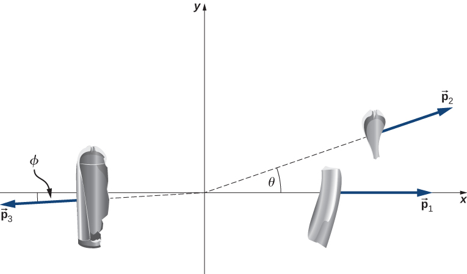
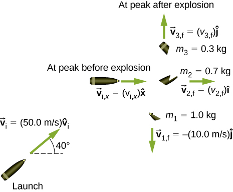

![Figure a, titled break initial momentum into x and y components shows vector p 1 i as a solid arrow pointing to the right and down. Its components are shown as dashed arrows: p 1 i y points down from the tail of p 1 i and p 1 i x points to the right from the head of p 1 i y to the head of p 1 i. Vector p 2 i is shown as a solid arrow with its tail at the head of vector p 1 i, and is shorter than p 1 i. Vector p 2 i points to the right and up. Its components are shown as dashed arrows: p 2 i x points to the right from the tail of p 2 i and p 2 i y points up from the head of p 2 i x to the head of p 2 i. Vector p f points from the tail of p 1 i to the head of p 2 i, pointing to the right and slightly down. Figure b titled add x and y components to obtain x and y components of final momentum shows the vector sums of the components. P 1 i y is a downward arrow. P 2 i y is a shorter upward arrow, aligned with its tail at the head of P 1 i y. P f y is a short downward arrow that starts at the tail of P 1 i y and ends at the head of P 2 i y. P 1 i x is a rightward arrow. P 2 i x is a shorter rightward arrow, aligned with its tail at the head of P 1 i x. P f x is a long rightward arrow that starts at the tail of P 1 i x and ends at the head of P 2 i x. Figure c, titled add x and y components of final momentum shows the right triangle formed by sides p f x and p f y and hypotenuse p f. Arrows from figure b indicate that p f x and p f y are the same in figures b and c.](CNX_UPhysics_09_05_Vector_add.jpg)
By the end of this section, you will be able to:
It is far more common for collisions to occur in two dimensions; that is, the angle between the initial velocity vectors is neither zero nor . Let’s see what complications arise from this.
The first idea we need is that momentum is a vector; like all vectors, it can be expressed as a sum of perpendicular components (usually, though not always, an x-component and a y-component, and a z-component if necessary). Thus, when we write down the statement of conservation of momentum for a problem, our momentum vectors can be, and usually will be, expressed in component form.
The second idea we need comes from the fact that momentum is related to force:
Expressing both the force and the momentum in component form,
Remember, these equations are simply Newton’s second law, in vector form and in component form. We know that Newton’s second law is true in each direction, independently of the others. It follows therefore (via Newton’s third law) that conservation of momentum is also true in each direction independently.
These two ideas motivate the solution to two-dimensional problems: We write down the expression for conservation of momentum twice: once in the x-direction and once in the y-direction.
This procedure is shown graphically in [link].
We solve each of these two component equations independently to obtain the x- and y-components of the desired velocity vector:
(Here, m represents the total mass of the system.) Finally, combine these components using the Pythagorean theorem,
The method for solving a two-dimensional (or even three-dimensional) conservation of momentum problem is generally the same as the method for solving a one-dimensional problem, except that you have to conserve momentum in both (or all three) dimensions simultaneously:
Traffic Collision A small car of mass 1200 kg traveling east at 60 km/hr collides at an intersection with a truck of mass 3000 kg that is traveling due north at 40 km/hr ([link]). The two vehicles are locked together. What is the velocity of the combined wreckage?
Strategy First off, we need a closed system. The natural system to choose is the (car + truck), but this system is not closed; friction from the road acts on both vehicles. We avoid this problem by restricting the question to finding the velocity at the instant just after the collision, so that friction has not yet had any effect on the system. With that restriction, momentum is conserved for this system.
Since there are two directions involved, we do conservation of momentum twice: once in the x-direction and once in the y-direction.
Solution Before the collision the total momentum is
After the collision, the wreckage has momentum
Since the system is closed, momentum must be conserved, so we have
We have to be careful; the two initial momenta are not parallel. We must add vectorially ([link]).
If we define the +x-direction to point east and the +y-direction to point north, as in the figure, then (conveniently),
Therefore, in the x-direction:
and in the y-direction:
Applying the Pythagorean theorem gives
As for its direction, using the angle shown in the figure,
This angle is east of north, or counterclockwise from the +x-direction.
Significance As a practical matter, accident investigators usually work in the “opposite direction”; they measure the distance of skid marks on the road (which gives the stopping distance) and use the work-energy theorem along with conservation of momentum to determine the speeds and directions of the cars prior to the collision. We saw that analysis in an earlier section.
Check Your Understanding Suppose the initial velocities were not at right angles to each other. How would this change both the physical result and the mathematical analysis of the collision?
Were the initial velocities not at right angles, then one or both of the velocities would have to be expressed in component form. The mathematical analysis of the problem would be slightly more involved, but the physical result would not change.
Exploding Scuba Tank A common scuba tank is an aluminum cylinder that weighs 31.7 pounds empty ([link]). When full of compressed air, the internal pressure is between 2500 and 3000 psi (pounds per square inch). Suppose such a tank, which had been sitting motionless, suddenly explodes into three pieces. The first piece, weighing 10 pounds, shoots off horizontally at 235 miles per hour; the second piece (7 pounds) shoots off at 172 miles per hour, also in the horizontal plane, but at a angle to the first piece. What is the mass and initial velocity of the third piece? (Do all work, and express your final answer, in SI units.)
StrategyTo use conservation of momentum, we need a closed system. If we define the system to be the scuba tank, this is not a closed system, since gravity is an external force. However, the problem asks for just the initial velocity of the third piece, so we can neglect the effect of gravity and consider the tank by itself as a closed system. Notice that, for this system, the initial momentum vector is zero.
We choose a coordinate system where all the motion happens in the xy-plane. We then write down the equations for conservation of momentum in each direction, thus obtaining the x- and y-components of the momentum of the third piece, from which we obtain its magnitude (via the Pythagorean theorem) and its direction. Finally, dividing this momentum by the mass of the third piece gives us the velocity.
Solution First, let’s get all the conversions to SI units out of the way:
Now apply conservation of momentum in each direction.
x-direction:
y-direction:
From our chosen coordinate system, we write the x-components as
For the y-direction, we have
This gives the magnitude of :
The velocity of the third piece is therefore
The direction of its velocity vector is the same as the direction of its momentum vector:
Because is below the -axis, the actual angle is from the +x-direction.
Significance The enormous velocities here are typical; an exploding tank of any compressed gas can easily punch through the wall of a house and cause significant injury, or death. Fortunately, such explosions are extremely rare, on a percentage basis.
Check Your Understanding Notice that the mass of the air in the tank was neglected in the analysis and solution. How would the solution method changed if the air was included? How large a difference do you think it would make in the final answer?
The volume of a scuba tank is about 11 L. Assuming air is an ideal gas, the number of gas molecules in the tank is
The average molecular mass of air is 29 g/mol, so the mass of air contained in the tank is about 2.2 kg. This is about 10 times less than the mass of the tank, so it is safe to neglect it. Also, the initial force of the air pressure is roughly proportional to the surface area of each piece, which is in turn proportional to the mass of each piece (assuming uniform thickness). Thus, the initial acceleration of each piece would change very little if we explicitly consider the air.
Momentum for a system can be conserved in one direction while not being conserved in another. What is the angle between the directions? Give an example.
The angle between the directions must be 90°. Any system that has zero net external force in one direction and nonzero net external force in a perpendicular direction will satisfy these conditions.
A 0.90-kg falcon is diving at 28.0 m/s at a downward angle of . It catches a 0.325-kg pigeon from behind in midair. What is their combined velocity after impact if the pigeon’s initial velocity was 7.00 m/s directed horizontally? Note that is a unit vector pointing in the direction in which the falcon is initially flying.
22.1 m/s at below the horizontal
A billiard ball, labeled 1, moving horizontally strikes another billiard ball, labeled 2, at rest. Before impact, ball 1 was moving at a speed of 3.00 m/s, and after impact it is moving at 0.50 m/s at 50° from the original direction. If the two balls have equal masses of 300 g, what is the velocity of the ball 2 after the impact?
A projectile of mass 2.0 kg is fired in the air at an angle of 40.0 to the horizon at a speed of 50.0 m/s. At the highest point in its flight, the projectile breaks into three parts of mass 1.0 kg, 0.7 kg, and 0.3 kg. The 1.0-kg part falls straight down after breakup with an initial speed of 10.0 m/s, the 0.7-kg part moves in the original forward direction, and the 0.3-kg part goes straight up.
a. 33 m/s and 110 m/s; b. 57 m; c. 480 m
Two asteroids collide and stick together. The first asteroid has mass of and is initially moving at 770 m/s. The second asteroid has mass of and is moving at 1020 m/s. Their initial velocities made an angle of 20° with respect to each other. What is the final speed and direction with respect to the velocity of the first asteroid?
A 200-kg rocket in deep space moves with a velocity of . Suddenly, it explodes into three pieces, with the first (78 kg) moving at and the second (56 kg) moving at . Find the velocity of the third piece.
A proton traveling at scatters elastically from an initially stationary alpha particle and is deflected at an angle of 85° with respect to its initial velocity. Given that the alpha particle has four times the mass of the proton, what percent of its initial kinetic energy does the proton retain after the collision?
Three 70-kg deer are standing on a flat 200-kg rock that is on an ice-covered pond. A gunshot goes off and the deer scatter, with deer A running at , deer B running at , and deer C running at . What is the velocity of the rock on which they were standing?
A family is skating. The father (75 kg) skates at 8.2 m/s and collides and sticks to the mother (50 kg), who was initially moving at 3.3 m/s and at 45° with respect to the father’s velocity. The pair then collides with their daughter (30 kg), who was stationary, and the three slide off together. What is their final velocity?
An oxygen atom (mass 16 u) moving at 733 m/s at 15.0° with respect to the direction collides and sticks to an oxygen molecule (mass 32 u) moving at 528 m/s at 128° with respect to the direction. The two stick together to form ozone. What is the final velocity of the ozone molecule?
341 m/s at 86.8° with respect to the axis.
Two cars of the same mass approach an extremely icy four-way perpendicular intersection. Car A travels northward at 30 m/s and car B is travelling eastward. They collide and stick together, traveling at 28° north of east. What was the initial velocity of car B?